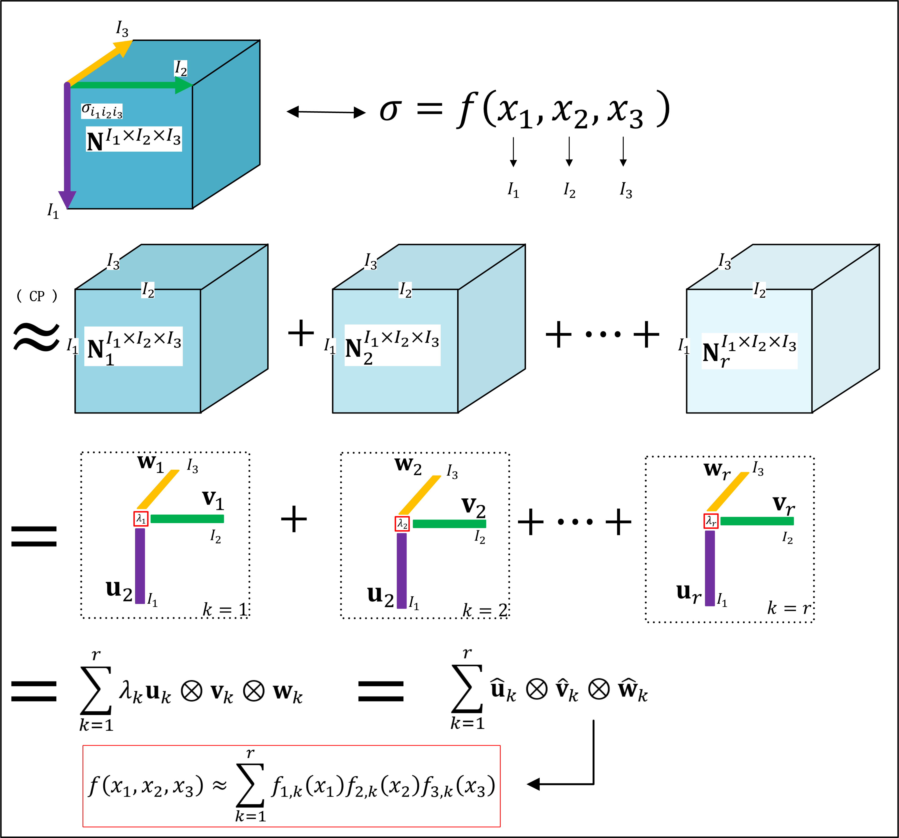
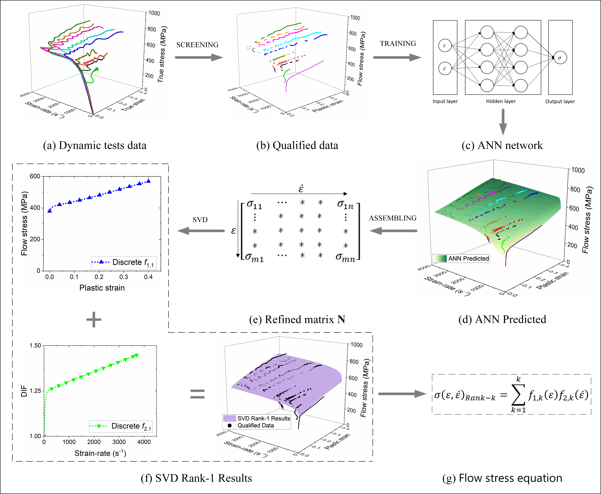
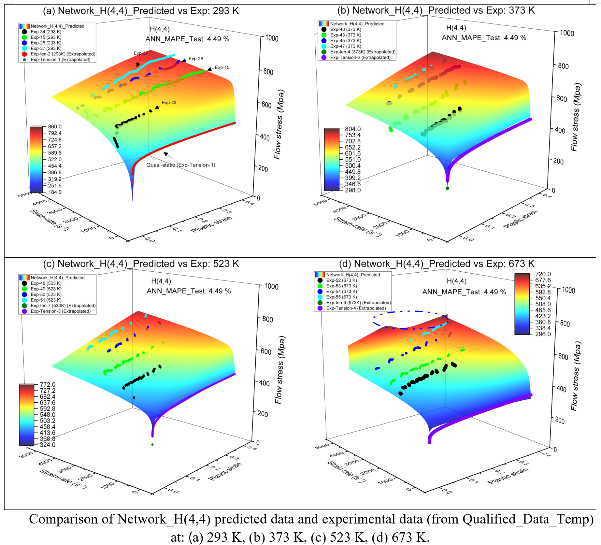

The mechanical behavior of engineering materials under extreme strain rates — as encountered in impact, crash, and ballistic events — is governed by their dynamic flow stress. For decades, the Johnson-Cook (J-C) equation has been the industry standard for representing this behavior, yet its mathematical foundations have remained unexamined and its calibration from real experimental data has been fraught with ambiguities.
This research establishes a rigorous, data-driven trilogy: first verifying when decoupled constitutive equations are mathematically legitimate, then determining flow stress from varied strain-rate SHPB data, and finally extending the framework to the full three-dimensional (strain, strain-rate, temperature) constitutive surface. The methodology — combining SVD/CP tensor decomposition with artificial neural networks — has broad applicability beyond the J-C equation to any factorized constitutive model.
The Johnson-Cook equation assumes that strain hardening, strain-rate sensitivity, and thermal softening can be separated — i.e., the dynamic flow stress is a product (or sum of products) of independent functions of each variable. While this assumption drives nearly all impact simulations globally, its mathematical validity against actual experimental data had never been systematically tested.

Traditional SHPB (Split Hopkinson Pressure Bar) tests require constant strain-rate conditions, which are practically difficult to achieve. Most experimental data contains mixed-strain-rate loading histories. Conventional approaches discard this "impure" data or fit it with simplified models, discarding valuable information and introducing systematic errors.

Real impact events involve simultaneous evolution of strain, strain-rate, and temperature. Part 2 extends the methodology to the complete three-dimensional constitutive surface — the full dependence of flow stress on all three thermomechanical variables simultaneously. CP (CANDECOMP/PARAFAC) tensor decomposition generalizes the SVD approach to 3D data arrays.

"This trilogy establishes a complete, mathematically grounded pipeline for dynamic material characterization: from verifying when empirical models are legitimate, to determining constitutive equations from realistic (non-ideal) experimental data, to fully resolving the three-dimensional mechanical response. The same ANN+SVD/CP methodology has since been extended to impact resistance prediction, demonstrating its broad applicability as a data-driven mechanics framework."— Research significance of the constitutive modeling trilogy